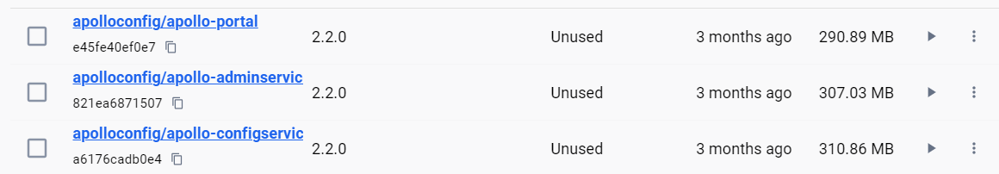

Docker-Desktop 部署Apollo
Lamber
2022-02-16
本篇故意尽量使用UI界面交互替代docker命令，达到最终部署目的；
本篇部署目的用于本地调试，因此知部署单节点、管理单一环境服务，不涉及服务发现、负载均衡等组件部署，不涉及管理多套环境的场景。
0. 前言
一套单节点功能完整的Apollo系统，分三个核心服务：
- apollo-portal
- apollo-adminservice
- 提供配置的修改、发布等功能，服务对象是Apollo Portal（管理界面）
- apollo-configservice
- 提供配置的读取、推送等功能，服务对象是Apollo客户端
下图源于官方文档架构模块：

因此，实际上一套 portal 可以管理多套 adminservice，是一个后台界面整合管理多套环境配置的基础。
见官方文档：Portal如何增加环境？
本篇只部署一套dev环境用于调试。
1. 初始化Mysql库表
见官方文档说明：[使用 mysql 数据库，手动初始化]
下载两份sql文件：
使用Navicat导入到Mysql中，没部署Mysql看这里：Docker-Desktop 部署MySQL
导入成功后，Mysql中会增加 ApolloConfigDB 、 ApolloPortalDB 这两个数据库，及其下的若干表
2. 拉取Apollo镜像
拉取三个项目的镜像，这里选v2.2.0版本

3. 创建容器
3.1 运行apollo-configservice
docker命令模板：
1
2
3
4
5
6
7
8
| docker run -p 8080:8080 \
-e SPRING_DATASOURCE_URL="jdbc:mysql://fill-in-the-correct-server:3306/ApolloConfigDB?characterEncoding=utf8" \ #注意这里的ip地址要填写本机ip或docker子网ip，才能访问到mysql
-e SPRING_DATASOURCE_USERNAME=FillInCorrectUser \
-e SPRING_DATASOURCE_PASSWORD=FillInCorrectPassword \
-d \
-v /tmp/logs:/opt/logs \ #这句在windows平台需要更改
--network ${subnet} \
--name apollo-configservice apolloconfig/apollo-configservice:${version}
|
参数含义：
- SPRING_DATASOURCE_URL: 对应环境ApolloConfigDB的地址
- SPRING_DATASOURCE_USERNAME: 对应环境ApolloConfigDB的用户名
- SPRING_DATASOURCE_PASSWORD: 对应环境ApolloConfigDB的密码
已知在docker bridge子网中，mysql的ip地址是172.17.0.2，下文不赘述。
整合成当前所需的命令：
1
| docker run -p 18080:8080 -e SPRING_DATASOURCE_URL="jdbc:mysql://172.17.0.2:3306/ApolloConfigDB?characterEncoding=utf8" -e SPRING_DATASOURCE_USERNAME=root -e SPRING_DATASOURCE_PASSWORD=123456 -d --network bridge --name apollo-configservice apolloconfig/apollo-configservice:2.2.0
|
在Docker-Desktop上UI界面没办法填写 –network 参数，确实有局限性，下文不赘述。
3.2 运行apollo-adminservice
docker命令模板：
1
2
3
4
5
6
7
| docker run -p 8090:8090 \
-e SPRING_DATASOURCE_URL="jdbc:mysql://fill-in-the-correct-server:3306/ApolloConfigDB?characterEncoding=utf8" \ #注意这里的ip地址要填写本机ip或docker子网ip，才能访问到mysql
-e SPRING_DATASOURCE_USERNAME=FillInCorrectUser -e SPRING_DATASOURCE_PASSWORD=FillInCorrectPassword \
-d \
-v /tmp/logs:/opt/logs \ #这句在windows平台需要更改
--network ${subnet} \
--name apollo-adminservice apolloconfig/apollo-adminservice:${version}
|
参数含义：
- SPRING_DATASOURCE_URL: 对应环境ApolloConfigDB的地址
- SPRING_DATASOURCE_USERNAME: 对应环境ApolloConfigDB的用户名
- SPRING_DATASOURCE_PASSWORD: 对应环境ApolloConfigDB的密码
整合成当前所需的命令：
1
| docker run -p 18090:8090 -e SPRING_DATASOURCE_URL="jdbc:mysql://172.17.0.2:3306/ApolloConfigDB?characterEncoding=utf8" -e SPRING_DATASOURCE_USERNAME=root -e SPRING_DATASOURCE_PASSWORD=123456 -d --network bridge --name apollo-adminservice apolloconfig/apollo-adminservice:2.2.0
|
3.3 运行apollo-portal
docker命令模板：
1
2
3
4
5
6
7
8
9
10
11
| docker run -p 8070:8070 \
-e SPRING_DATASOURCE_URL="jdbc:mysql://fill-in-the-correct-server:3306/ApolloPortalDB?characterEncoding=utf8" \ #注意这里的ip地址要填写本机ip或docker子网ip，才能访问到mysql
-e SPRING_DATASOURCE_USERNAME=FillInCorrectUser \
-e SPRING_DATASOURCE_PASSWORD=FillInCorrectPassword \
-e APOLLO_PORTAL_ENVS=dev,pro \
-e DEV_META=http://fill-in-dev-meta-server:8080 \
-e PRO_META=http://fill-in-pro-meta-server:8080 \
-d \
-v /tmp/logs:/opt/logs \ #这句在windows平台需要更改
--network ${subnet} \
--name apollo-portal apolloconfig/apollo-portal:${version}
|
参数含义：
- SPRING_DATASOURCE_URL: 对应环境ApolloConfigDB的地址
- SPRING_DATASOURCE_USERNAME: 对应环境ApolloConfigDB的用户名
- SPRING_DATASOURCE_PASSWORD: 对应环境ApolloConfigDB的密码
- APOLLO_PORTAL_ENVS(可选): 对应ApolloPortalDB中的apollo.portal.envs配置项，如果没有在数据库中配置的话，可以通过此环境参数配置
- DEV_META/PRO_META(可选): 配置对应环境的Meta Service地址，以${ENV}_META命名，需要注意的是如果配置了ApolloPortalDB中的apollo.portal.meta.servers配置，则以apollo.portal.meta.servers中的配置为准
因为本次只需要配置一套dev环境，因此需要指定 APOLLO_PORTAL_ENVS 和 DEV_META
已知apollo-configservice的ip:port是172.17.0.3:8080
整合成当前所需的命令：
1
| docker run -p 18070:8070 -e SPRING_DATASOURCE_URL="jdbc:mysql://172.17.0.2:3306/ApolloPortalDB?characterEncoding=utf8" -e SPRING_DATASOURCE_USERNAME=root -e SPRING_DATASOURCE_PASSWORD=123456 -e APOLLO_PORTAL_ENVS=dev -e DEV_META=http://172.17.0.3:8080 -d --network bridge --name apollo-portal apolloconfig/apollo-portal:2.2.0
|
4. 后台测试
访问：http://127.0.0.1:18070/
初始账号密码：apollo/admin
参考文档